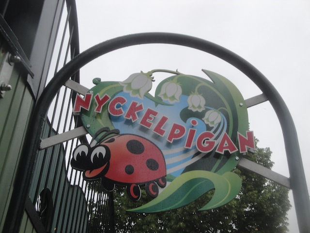
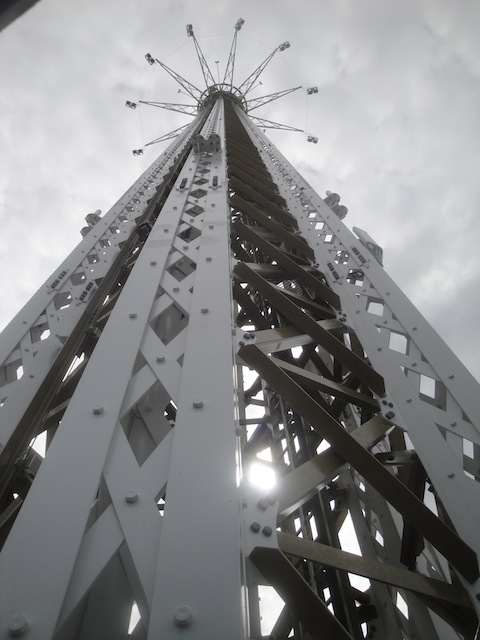
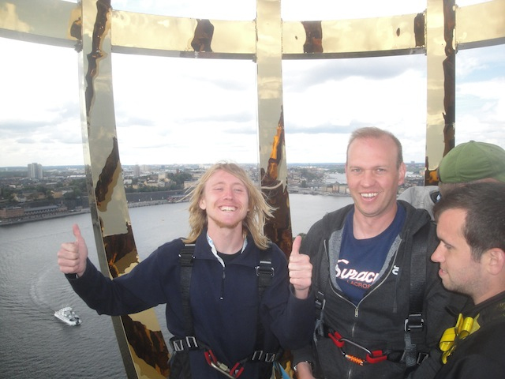
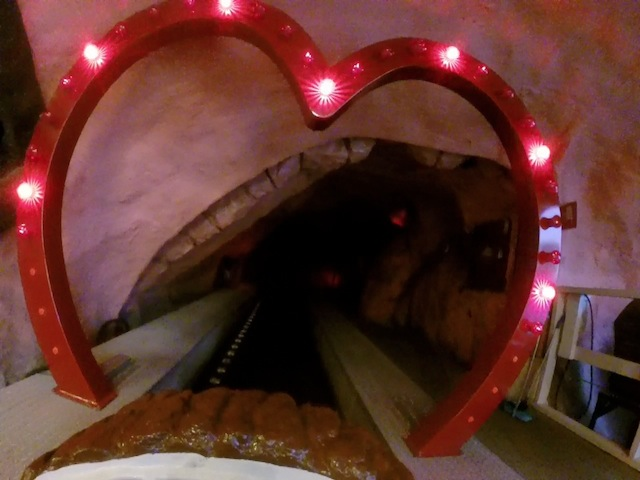
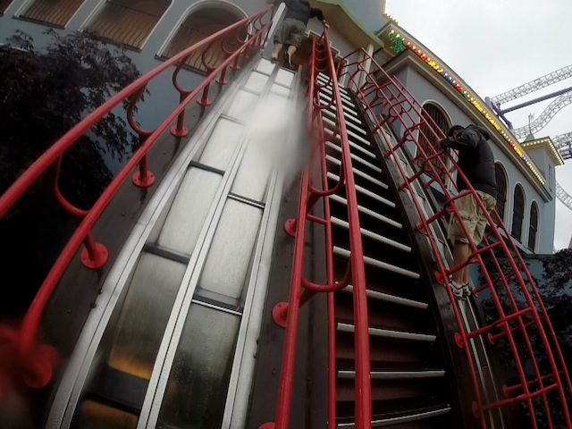

| |
Gröna Lund Review

Gröna Lund is one of those parks that you may not have ever heard of, but you just might've seen the park if you've been to Stockholm, or look at generic photos of the Stockholm skyline, as yep. This is that park. This is that theme park right by the Baltic Sea, or at least, it's in the waters around the Stockholm Archipelago, right across from Djurgården. Now if you look at Gröna Lund, it looks very interesting. It just looks like a bunch of roller coasters and rides are stacked on top of one another, right by the sea. So yeah. It's very visually appealing, with just how many rides they fit into such a tight space, given how little space they have. Have you ever played RCT and gotten stuck in a scenario such as Dinky Park? You know, the one where you essentially have no room. Yeah, it's kind of like that with Gröna Lund. So they get really creative with how they fit all those rides into such a tight space. Honestly, it's kind of amazing how they do it, and they pretty much prove that no matter how little space you have and how you feel that they can't add a new coaster in a spot like that. Well Gröna Lund essentially proves that that's bullsh*t. No matter how little space it seems like you have, you can always cram in a new ride. And on top of all that, the rides that they do cram in are a ton of fun. All those roller coasters that are stacked on top of one another are a ton of fun. I know I have coaster reviews for all those rides, but Insane is well...insane and just so damn fun. And all the other rides, they just blend into the park so well. It just has this...carnival atmosphere that adds to the park. I know I'm getting ahead of myself and this'll all be explained in much greater detail below, but Gröna Lund really is a fantastic park. I know it frequently gets compared to its sister park, Liseberg, as they're the two main theme parks of Sweden, and both are really good in their own right. Why keep talking about Gröna Lund here when I can go through everything in much greater detail down below.
Rollercoasters
There is a link to a review of all the Roller Coasters at Gröna Lund.
Top Coasters
Insane Review

Really Fun Coasters
Jetline Review

Twister Review

Vilda Musen Review

Family Coasters
Kvasten Review

Kiddy Coasters
Nyckelpigan Review

Tuff Tuff Tåget Review

Flat Rides
Here are the reviews of all the Flat Rides at Gröna Lund. OK. Let's first go over their biggest attraction. Eclipse. Now I technically didn't actually ride this ride thanks to weather the first day I was there. The second day, however, I couldn't ride it, because we were all too busy climbing it instead. So yeah. I may not have ridden a giant starflyer (Thanks for the horrendous operations Six Flags Over Texas). But I did manage to climb it. Now this is something that is unavaliable to the general public as I did this as part of a charity fundraiser. But it's a freaky feeling. Being on top of a starflyer feels...amazing. And that ride up to the top just feels freaky. Hope you don't mind standing on a thing up 300 ft and climbing a ladder 100 ft to get to that. OK, let's move on to the next ride. Fritt Fall. This is one of those Intamin Freefalls. One is a regular sit down drop tower. That's fun, especially since it's a really big drop tower. However, then there's the Stand Up Floorless Side. And it tilts too. So if you've ridden Acrophobia at Six Flags Over Georgia or High Fall at Movie Park Germany, that's a pretty good idea of what this experience is. Except it's more than twice as tall. So yeah. This is going to totally land a spot on our Top 10 Drop Towers List. And a really high one at that. And though I didn't ride it, keeping up with the drop tower theme, they also have an S&S Tower. I'm assuming that this is a Space Shot since they already have Fritt Fall. And on top of that, they're adding another drop tower for 2017 that looks...really intersting. I've never seen a drop tower like that and I really hope to ride that next time I go to Gröna Lund. =) They also have a magic carpet, an octopus ride, some chairswings, some teacups, a breakdance, some bumper cars, and a carousel. Not a bad flat ride collection.

These giant Starflyers are always fun.

I'm on top of a 400 ft Starflyer bitches! =)
 "OH SH*T!!!"
"OH SH*T!!!"
Dark Rides
Here are the reviews of all the Dark Rides at Gröna Lund. Now surprisingly, Gröna Lund doesn't really have a good dark ride collection. Hell, the one dark ride that they have there is the tunnel of love. Yep, the stereotypical cheesy ride featured in most cartoons. And it's intersting. First off, you're riding in these tiny logs. Because this ride is meant for children. What the hell are you folks doing here!? Get off this ride! But aside from that, it's fun. You learn that true love isn't loving one another. It's all about jousting at axe point by the king. Get your sh*t together Disney. But yeah. Hopefully Gröna Lund can add another dark ride, as one would really fit for this park.

No Gröna Lund. Love is not all you need. You need a real dark ride.
Water Rides
Surprisingly, Gröna Lund has no water rides. I know Stockholm isn't exactly a warm place, but plenty of other parks in similar climates have water rides and Gröna Lund could really use one.
Dining
Here are the reviews of all the resteraunts at Gröna Lund. I'm not sure if this was in one of the restaraunts, or if this was a special meal just for us. But there was the meal we had, which was lasagna and beer. And, yeah. I loved that. I know lasagna is a favorite of mine, but this just seemed extra cheesy. Sure, there's not a lot of marinara sauce in this lasagna, but it's got a lot of cheese, a lot of ground beef, and all in all, it's just really good. I certainly hope that they serve this in one of the resteraunts they have at Gröna Lund. And yeah, Gröna Lund does indeed, have a lot of resteraunts. Looking at their website, they seem to have a few good resteraunts. They have a Mexican Resteraunt, a BBQ Resteraunt, a World Resteraunt, and a Pizza Place right by the sea. Speaking of pizza, I may not have it there, but they did serve us pizza and beer. That's always good, and the pizza itself was pretty tasty. And those are just the big sit down resteraunts. I know they have a lot of other quick places, as I did get lunch at one of those fast Thai places. It was pretty good food. Sure, it probably would've been better from a real legit resteraunt, but I'm always a fan of fast and easy food, and Thai food is pretty good. So yeah. Gröna Lund definetly has a good dining selection.
 ♫La-La-La-La-Lasgna!♫
♫La-La-La-La-Lasgna!♫
Theming and Other Attractions
Here are the reviews of all the other stuff at Gröna Lund. OK, as far as theming goes, there is none at Gröna Lund. It is in every sense of the word, an amusement park. But you don't have to worry because the setting that this park has, it's just phenomenal. It's located right off the Baltic Sea, so there's a big seaside vibe that Gröna Lund gives off. And on top of that, it's location right smack dab in Stockholm. So yeah, the park setting for Gröna Lund is without a doubt, one of my favorites. It's totally going to land a high spot on our Top 10 Park Settings List. I'm pretty sure this is one of those parks that people know about because of just how prominently it is located right smack in the middle of Stockholm. It's kind of like Tivoli Gardens in that sense. Now as far as other park stuff is concerned, Gröna Lund does have some stuff. Just not quite as much as it is a very packed and tight park. I know they do have concerts in the middle of the park. I know someone was playing the morning that I was at the park. I have no idea who it was. Probably some local Swedish band most likely, but they were pretty good. And I know that they do host much bigger acts there. I'm sure they've put on some show that I'd love to see. Oh, and being a European park, we of course have to talk about their fun house. Because seriously, nearly all European Parks have some sort of fun house, and the one at Gröna Lund is better than average. It has extremely steep stairs, a lot of cool stuff to spin around on, and some really fun slides down. And then there's their upcharge haunt maze. I love how these things are just standard in European Parks. Yes, it's an upcharge, but if you're a horror fan, then it's worth checking out. And I'm pretty sure there's even more at Gröna Lund that I'm just missing.

Seriously. This fun house is a lot of fun.
In Conclusion
Gröna Lund is just a fantastic park. It is definetly one of the best parks in Europe and it's up there for Sweden. I know there's a lot of back and forth as to which is better. Liseberg or Gröna Lund. And while it's super hard to pick as while I do think that Liseberg has better roller coasters, I prefer the rest of the stuff at Gröna Lund. But it's just so hard to choose. I mean, Gröna Lund does have some really good roller coasters of its own as well, including a Zac-Spin that isn't completely neutered. And on top of that, it has some really great flat rides, and some other really cool stuff such as a great fun house and a Haunt that they keep open yearround. I know that the park could add some more stuff, such as a good dark ride, or just any water ride at all. But honestly, Gröna Lund already has so much. Especially considering just how small this park is. No really. The park really is that much smaller than people realize. Everything is built on top of each other, and it just gives a nice classic vibe. Almost like you're living inside an RCT Scenario. And I honestly really like that. So yeah, if you're ever in Stockholm, I strongly recommend checking out Gröna Lund. It really is one of the best parks in Europe, and totally worth it if you're in the area. It's right in the city. You don't have to do a lot to get here. =)
Enthusiast FAQs.
*Are there kiddy coaster restrictions? - No. There are no restrictions on either of the kiddy coasters.

Tips
*Make sure you get an unbalanced ride on Insane.
*I think their POV policy is Go-Pro only. Hey, fine with me.
*Check out all the other fun stuff at Gröna Lund. Don't underestimate it because of its size.
*Get plenty of rides on Insane, Twister, and Jetline.
*Have Fun!!!
Theme Park Category:
Theme Park
Location
Stockholm, Stockholm, Sweden
Last Day Visited
June 24, 2014
Video
I'll post my Gröna Lund video soon. I know I normally post the video with the review. But I'm super late with this review and just need to post it ASAP. I'll post it later and then update this.
Complete Update List
2014
TPR's Scandinavia Trip
Here's a link to the parks website.
Home
|